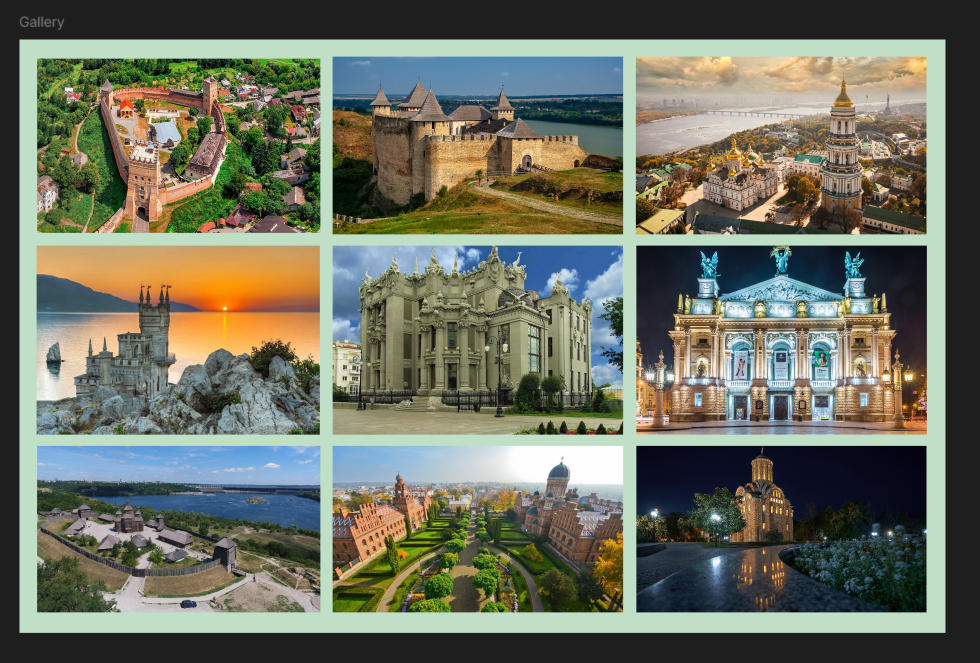
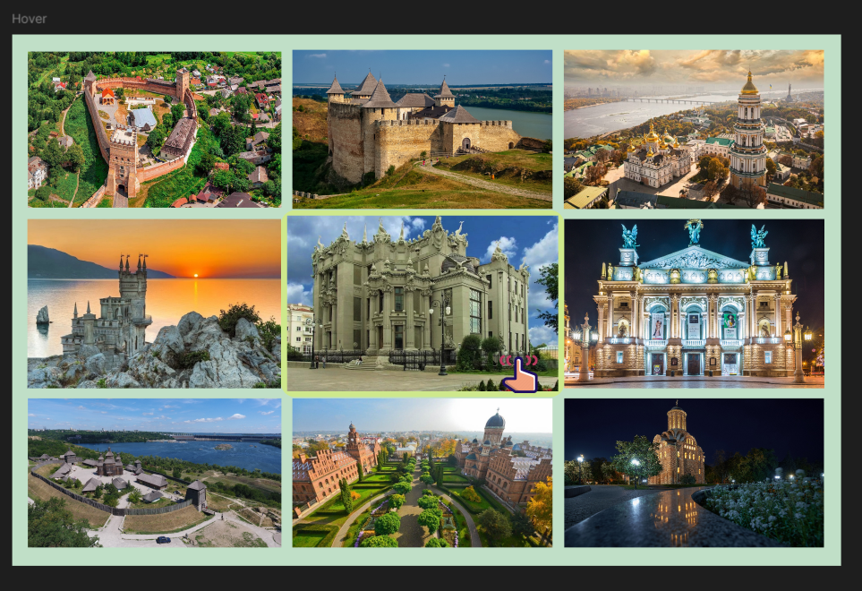
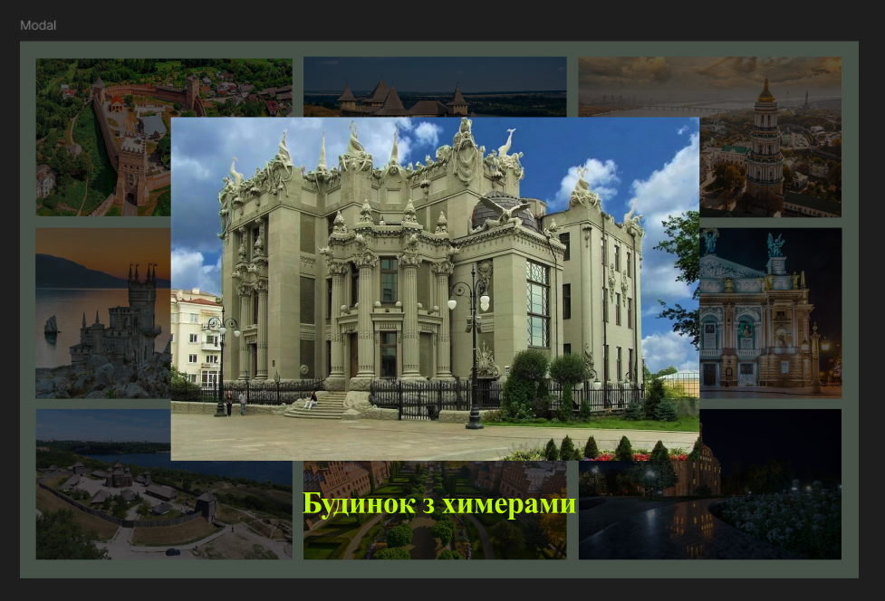
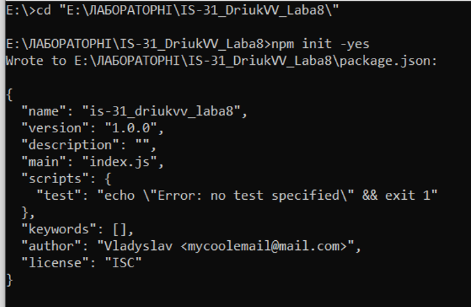
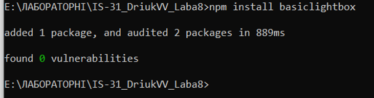
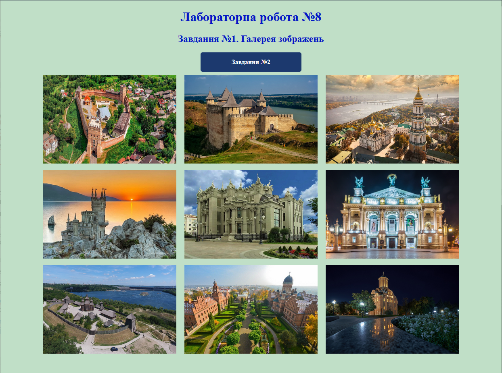
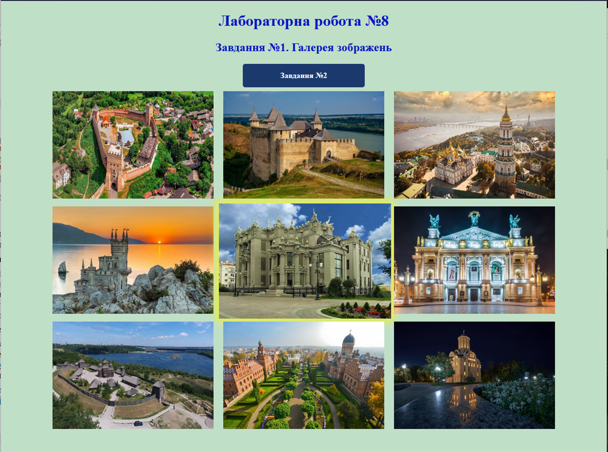
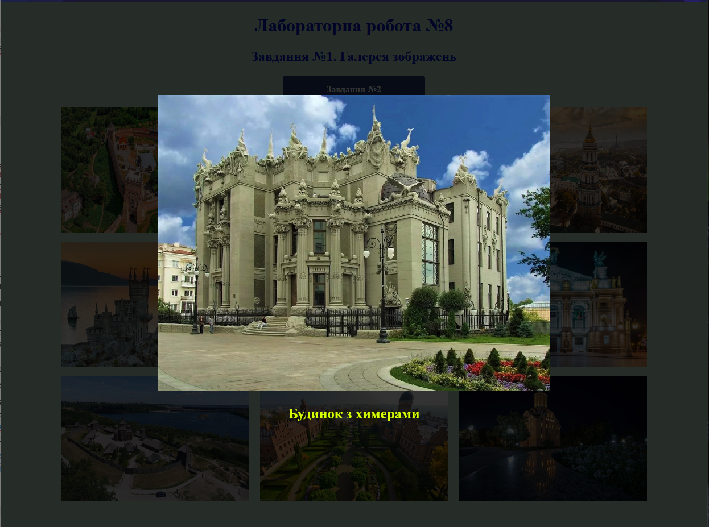

Завдання №1. Галерея зображень
Макет (Figma)



HTML-код (index.html)
<!DOCTYPE html>
<html lang="en">
<head>
<meta charset="UTF-8">
<meta name="viewport" content="width=device-width, initial-scale=1.0">
<title>IS-31 Driuk LR8.Task1</title>
<link rel="stylesheet" href="./CSS/style.css">
<!--Посилання на мініфікований (.min) CSS файл бібліотеки basicLightbox для модального вікна -->
<link href="https://cdn.jsdelivr.net/npm/basiclightbox@5.0.4/dist/basicLightbox.min.css" rel="stylesheet">
</head>
<body>
<header>
<h1>Лабораторна робота №8</h1>
</header>
<main>
<h2>Завдання №1. Галерея зображень</h2>
<a href="./2-form.html" class="buttonblue">Завдання №2</a>
<ul class="gallery"></ul>
</main>
<footer></footer>
<script type="module" src="./JS/gallery.js"></script>
<!--Посилання на мініфікований (.min) JS файл бібліотеки basicLightbox для модального вікна -->
<script src="https://cdn.jsdelivr.net/npm/basiclightbox@5.0.4/dist/basicLightbox.min.js"></script>
</body>
</html>
CSS-код (style.css)
/* Загальні стилі сторінок */
body {
background-color: #C0DFC7;
}
h1, h2 {
text-align: center;
color: rgb(5, 21, 197);
}
/* Стилі для списку галереї зображень */
ul.gallery {
list-style: none;
margin: 0px;
padding: 0px;
display: flex;
justify-content: center;
flex-wrap: wrap;
}
ul.gallery li {
width: 330px;
height: 220px;
margin: 8px 10px;
}
ul.gallery li img {
position: relative;
width: 100%;
height: 100%;
transition: all 0.9s;
}
ul.gallery li img:hover {
width: 107%;
height: 107%;
translate: -2.5% -2.5%;
box-shadow: 0 0 15px 5px rgba(255, 247, 0, 0.8);
}
/* Стиль для модального вікна */
div.modalWindow{
display: flex;
flex-direction: column;
align-content: center;
height: 600px;
}
div.modalWindow img{
width: auto;
height: 90%;
}
div.modalWindow p{
color: rgb(212, 255, 0);
font-size: 25px;
font-weight: bold;
text-align: center;
}
/* Стиль для кнопки переходу між сторінками */
a.buttonblue {
width: 200px;
padding: 15px 25px;
color: #fff;
background-color: rgb(28, 57, 110);
font-size: 16px;
font-weight: bold;
text-align: center;
text-decoration: none;
border-radius: 5px;
transition: 0.3s ease;
display: block;
margin-left: auto;
margin-right: auto;
}
a.buttonblue:hover {
transform: scale(1.07);
box-shadow: 0 4px 8px rgba(0, 0, 0, 0.2);
}
/* Стиль для форми зворотнього зв'язку*/
form.feedback-form{
margin-left: 35%;
margin-right: 35%;
margin-top: 3%;
position: absolute;
width: 30%;
font-size: 20px;
background-color: #fff;
box-shadow: 0 4px 8px rgba(0, 0, 0, 0.2);
border-radius: 10px;
padding: 20px;
}
form.feedback-form button{
background-color: #012fd5;
border:none;
color: white;
font-weight: bold;
border-radius: 8px;
padding:10px 20px;
margin: 10px 0px;
transition: all 0.5s;
}
form.feedback-form label{
color: #012fd5;
font-weight: bold;
}
form.feedback-form button:hover{
background-color:#6C8CFF;
}
form.feedback-form input, form.feedback-form textarea{
width: 100%;
transition: border-color 0.8s;
}
form.feedback-form input:hover, form.feedback-form textarea:hover{
border-color: rgb(21, 1, 104);
}
JS-код (gallery.js)
//import * as basicLightbox from "../node_modules/basiclightbox/src/scripts/main.js"
// Масив об'єктів з інформацією про зображення
const images = [
{
preview:
'https://nauua.org/media/k2/items/cache/24ca0a85fc075dc4babe60ca9c74b464_XL.jpg',
original:
'https://nauua.org/media/k2/items/cache/24ca0a85fc075dc4babe60ca9c74b464_XL.jpg',
description: ' Замок Любарта ',
},
{
preview:
'https://www.worldhistory.org/img/c/p/1600x900/14901.jpg',
original:
'https://www.worldhistory.org/img/c/p/1600x900/14901.jpg',
description: ' Хотинська фортеця ',
},
{
preview:
'https://lavra.ua/wp-content/uploads/2024/03/photo_2024-03-16_09-59-10-e1710586736540.jpg',
original:
'https://lavra.ua/wp-content/uploads/2024/03/photo_2024-03-16_09-59-10-e1710586736540.jpg',
description: ' Києво-Печерська лавра ',
},
{
preview:
'https://18fc33b6ca.cbaul-cdnwnd.com/9c7578031084e7f79abd67a468c3faf9/200000021-8c67f8d5e6/207797_15.jpg',
original:
'https://18fc33b6ca.cbaul-cdnwnd.com/9c7578031084e7f79abd67a468c3faf9/200000021-8c67f8d5e6/207797_15.jpg',
description: ' «Ластівчине гніздо» ',
},
{
preview:
'https://travels.in.ua/api/Photo/PhotoStreamCPOI/36880',
original:
'https://travels.in.ua/api/Photo/PhotoStreamCPOI/36880',
description: ' Будинок з химерами ',
},
{
preview:
'https://upload.wikimedia.org/wikipedia/commons/6/67/%D0%9B%D1%8C%D0%B2%D1%96%D0%B2%D1%81%D1%8C%D0%BA%D0%B8%D0%B9_%D0%BD%D0%B0%D1%86%D1%96%D0%BE%D0%BD%D0%B0%D0%BB%D1%8C%D0%BD%D0%B8%D0%B9_%D0%B0%D0%BA%D0%B0%D0%B4%D0%B5%D0%BC%D1%96%D1%87%D0%BD%D0%B8%D0%B9_%D1%82%D0%B5%D0%B0%D1%82%D1%80_%D0%BE%D0%BF%D0%B5%D1%80%D0%B8_%D1%82%D0%B0_%D0%B1%D0%B0%D0%BB%D0%B5%D1%82%D1%83_%D1%96%D0%BC%D0%B5%D0%BD%D1%96_%D0%A1%D0%BE%D0%BB%D0%BE%D0%BC%D1%96%D1%97_%D0%9A%D1%80%D1%83%D1%88%D0%B5%D0%BB%D1%8C%D0%BD%D0%B8%D1%86%D1%8C%D0%BA%D0%BE%D1%97_13.jpg',
original:
'https://upload.wikimedia.org/wikipedia/commons/6/67/%D0%9B%D1%8C%D0%B2%D1%96%D0%B2%D1%81%D1%8C%D0%BA%D0%B8%D0%B9_%D0%BD%D0%B0%D1%86%D1%96%D0%BE%D0%BD%D0%B0%D0%BB%D1%8C%D0%BD%D0%B8%D0%B9_%D0%B0%D0%BA%D0%B0%D0%B4%D0%B5%D0%BC%D1%96%D1%87%D0%BD%D0%B8%D0%B9_%D1%82%D0%B5%D0%B0%D1%82%D1%80_%D0%BE%D0%BF%D0%B5%D1%80%D0%B8_%D1%82%D0%B0_%D0%B1%D0%B0%D0%BB%D0%B5%D1%82%D1%83_%D1%96%D0%BC%D0%B5%D0%BD%D1%96_%D0%A1%D0%BE%D0%BB%D0%BE%D0%BC%D1%96%D1%97_%D0%9A%D1%80%D1%83%D1%88%D0%B5%D0%BB%D1%8C%D0%BD%D0%B8%D1%86%D1%8C%D0%BA%D0%BE%D1%97_13.jpg',
description: ' Львівська національна опера ',
},
{
preview:
'https://www.zoda.gov.ua/images/article/1/000141/141134/picture.jpg',
original:
'https://www.zoda.gov.ua/images/article/1/000141/141134/picture.jpg',
description: ' Національний заповідник «Хортиця» ',
},
{
preview:
'https://vidviday.ua/blog/wp-content/uploads/2016/01/chernovtsy-tam-ua1.jpg',
original:
'https://vidviday.ua/blog/wp-content/uploads/2016/01/chernovtsy-tam-ua1.jpg',
description: ' Чернівецький національний університет ',
},
{
preview:
'https://upload.wikimedia.org/wikipedia/commons/thumb/b/b6/%D0%9F%27%D1%8F%D1%82%D0%BD%D0%B8%D1%86%D1%8C%D0%BA%D0%B0_%D1%86%D0%B5%D1%80%D0%BA%D0%B2%D0%B0_%D0%B2%D0%BD%D0%BE%D1%87%D1%96.jpg/2560px-%D0%9F%27%D1%8F%D1%82%D0%BD%D0%B8%D1%86%D1%8C%D0%BA%D0%B0_%D1%86%D0%B5%D1%80%D0%BA%D0%B2%D0%B0_%D0%B2%D0%BD%D0%BE%D1%87%D1%96.jpg',
original:
'https://upload.wikimedia.org/wikipedia/commons/thumb/b/b6/%D0%9F%27%D1%8F%D1%82%D0%BD%D0%B8%D1%86%D1%8C%D0%BA%D0%B0_%D1%86%D0%B5%D1%80%D0%BA%D0%B2%D0%B0_%D0%B2%D0%BD%D0%BE%D1%87%D1%96.jpg/2560px-%D0%9F%27%D1%8F%D1%82%D0%BD%D0%B8%D1%86%D1%8C%D0%BA%D0%B0_%D1%86%D0%B5%D1%80%D0%BA%D0%B2%D0%B0_%D0%B2%D0%BD%D0%BE%D1%87%D1%96.jpg',
description: ' П`ятницька церква ',
}
];
// Елемент списку галереї
let gallery = document.querySelector('ul.gallery');
// Цикл, що перебирає масив зображень та додає кожне зображення до DOM
images.forEach((image) => {
imageAdd(image);
});
// Функція, що створює елементи списку та додає їх до галереї
function imageAdd(imgObj) {
let imgElem = document.createElement("img");
imgElem.src = imgObj.preview;
imgElem.alt = imgObj.description;
let listItem = document.createElement("li");
listItem.append(imgElem);
gallery.append(listItem);
};
// Обробник події "click" для галереї
gallery.addEventListener('click', function (event) {
let clickedImage = images.find((img) => img.preview === event.target.src);
console.log(clickedImage.original);
// Створення модального вікна з повнорозмірним зображенням
const instance = basicLightbox.create(`
<div class="modalWindow">
<img src="${clickedImage.original}" alt="${clickedImage.description}">
<p>${clickedImage.description}</p>
</div>
`, { closable: true }); // Налаштування модального вікна, щоб його можна було закривати
// Відображення модального вікна
instance.show();
});
Підключення бібліотеки через командний рядок (за допомогою npm)


Результат виконання


